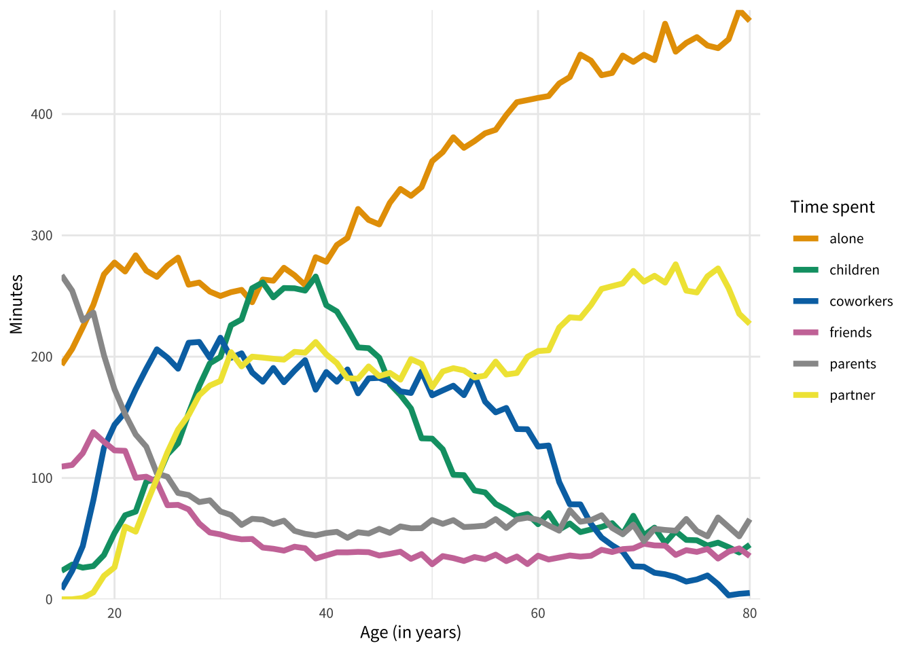

font_add_google("Noto Sans KR", family ='noto')showtext_auto()theme_customs <-theme(text =element_text(family ='noto', size =9),plot.title.position ='plot',plot.title =element_text(face ='bold', colour ="#191970",margin =margin(t =2, r =0, b =7, l =0, unit ="mm") ))theme_set(theme_minimal() + theme_customs)
음영을 활용하자
mpg %>%ggplot(aes (x =factor(year), fill = class)) +geom_bar() +labs(title ="mpg data set 예시", x ="year")
자동차 종류가 많아 7개의 컬러가 사용되었고 각 차종별 구별이 어려움.
여러 수준을 갖는 범주형 변수에 관한 색 사용에 있어서 더 적은, 최대 3개 정도의 컬러만 사용하여 시각화를 수행하는 방법을 고려함.
자동차 종류를 구분하기 위해 색조(hue)뿐만 아니라 음영(shade)를 활용하는 것이 필요.
즉 3가지 컬러를 사용하여 투명도를 다르게 주어 7개 자동차 종류를 구분함.
이를 위해 우선 자동차 종류를 3그룹으로 분류함.
# Group classes into three groups (to reduce colors to 3)dat <- mpg |>mutate(year =factor(year),class_group =case_when( class %in%c('2seater', 'compact', 'midsize') ~"grp1", class =='minivan'~"grp2", T ~"grp3" ) )
2seater, compact, midsize는 grp1, minivan은 grp2, 나머지는 grp3으로 분류한 후 시각화를 수행함.
shades_plt <- dat |>ggplot(aes(x = year, fill = class_group, alpha = class)) +geom_bar() +labs(x ='Year',y ='Counts',alpha ='Class',title ='Show shades, not hues' )shades_plt
Warning: Using alpha for a discrete variable is not advised.
색조와 음영까지 활용해 3가지 color로 줄이긴 했지만 아직 전달력이 떨어짐.
눈으로 색조와 음영을 조합해 자동차 종류를 구분하기는 쉽지 않음.
따라서 투명도와 색상을 manual로 조정
투명도는 suv ~ minivan까지 점차 줄어들고, minivan이후부터 다시 줄어든 양만큼 투명도가 늘어나도록 설정
# color-blind safe colorscolors <- thematic::okabe_ito(3)# [1] "#E69F00" "#009E73" "#0072B2"# possible levels of transparency (one for each class)alpha_max <-1alpha_min <-0.7alpha_vals <-c(seq(alpha_max, alpha_min, length.out =4),seq(alpha_min, alpha_max, length.out =4)[-1] )alpha_vals
우측 범례를 하나로 통합하여 설정, ggplot2에서 guides()함수를 사용
fill에 대한 범례(class_group)를 삭제한 후 guide_legend()를 통해 alpha에 관한 범례에 fill 색상을 가져와 사전에 설정한 3개 그룹(class_group)의 override함.
Rows: 67 Columns: 9
── Column specification ────────────────────────────────────────────────────────
Delimiter: ","
chr (2): Entity, Code
dbl (7): Year, Time spent alone, by age of respondent (United States), Time ...
ℹ Use `spec()` to retrieve the full column specification for this data.
ℹ Specify the column types or set `show_col_types = FALSE` to quiet this message.
# Color-blind safe colorscolors <- thematic::okabe_ito(7)[-6]# Line plotp <- time_data |>ggplot(aes(x = age, y = minutes, col = person)) +geom_line(size =1.5) +scale_color_manual(values = colors) +coord_cartesian(xlim =c(15, 81), expand = F) +scale_y_continuous(minor_breaks =NULL) +labs(x ='Age (in years)', y ='Minutes', col ='Time spent')p

이러한 그래프를 스파게티 플롯(spaghetti plot)이라고 함.
이 그래프는 보고 인사이트를 얻기가 어려움. gghighlight package를 이용하여 원하는 선만 하일라이트 할 수 있음.
library(gghighlight)alone_plt <- p +gghighlight(person =='alone', use_direct_label = F) +labs(title ='Emphasize just one or a few categories')
Warning: Tried to calculate with group_by(), but the calculation failed.
Falling back to ungrouped filter operation...
alone_plt
그래프만으로 전달하고자 하는 메시지가 명확하게 드러나지 않을 때는 annotate() 함수를 이용하여 원하는 위치에 넣을 수 있다.
alone_plt +annotate('text',x =15,y =455,label ='We spend a lot of time alone...',hjust =0,vjust =0,family ='noto',size =7 )
age_40_plt <- p +gghighlight( person %in%c('alone', 'children'), age >=38, use_direct_label = F ) +geom_segment(x =38, xend =38, y =-Inf, yend =300, linetype =2, col ='grey20') +labs(title ='Emphasize just one or a few categories')
Warning: Tried to calculate with group_by(), but the calculation failed.
Falling back to ungrouped filter operation...
age_40_plt +annotate('text',x =15,y =403,label ='약 40세 이후부터는\n자녀들과 보내는 시간보다\n혼자 보내는 시간이 많아집니다.',hjust =0,vjust =0,family ='noto',lineheight =1.0,size =4.5 )
라벨링 활용하기
때로 범례는 집중도를 낮추기 때문에 범례를 없애고 플롯 내에 라벨링을 하여 정보를 전달할 수 있음.
싱글 라벨링의 경우는 annotate() 함수를 사용하고, 다중 라벨링의 경우는 geom_text() 함수를 사용함.
alone_plt +annotate('text',x =15,y =455,label ='우리는 많은 시간을 혼자 보냅니다...',hjust =0,vjust =0,family ='noto',size =5 ) +annotate('text', x =70, y =410, label ='혼자',hjust =0,vjust =0,size =5,family ='noto',color = colors[1] ) +labs(title ='라벨을 바로 작성하는 법') +theme(legend.position ='none')
위에서 ’혼자’라는 글자가 두번 중복되어 사용되었는데, 플롯 좌측 상단의 글의 ’혼자’라는 단어를 그래프와 같은 색으로 변경하여 정보를 전달할 수 있게 함.
library(ggtext)color_alone <- glue::glue("우리는 많은 시간을 <span style = 'color:{colors[1]};'>혼자</span> 보냅니다...")color_alone
우리는 많은 시간을 <span style = 'color:#E69F00;'>혼자</span> 보냅니다...